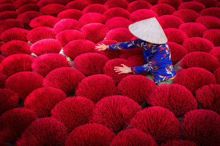

HA LONG BAYLimestone karsts rise like ancient guardians from emerald water. Mist drapes gently over quiet floating villages. Sunsets spill amber light across glassy waves. Boats drift slowly between towering stone pillars. Ha Long feels like a dream carved from sea and sky. |
|
HOI ANLanterns bloom in gold and crimson along the river. Old streets glow beneath soft twilight hues. The air carries silk, spice, and history. Reflections shimmer like scattered stars on water. Hoi An breathes romance in every quiet corner |
 |
SA PATerraced rice fields ripple like green stairways to the clouds. Morning fog curls around distant mountain peaks. Traditional villages rest gently in the valleys. The earth smells fresh with rain and soil. Sa Pa feels wild, serene, and beautifully untouched. |
|
FOODPho rises in fragrant swirls, star anise and steam in the morning air. Banh mi crackles softly, filled with bright herbs and warmth. Fresh spring rolls glow translucent like edible silk. Street-side grills whisper with sweet, smoky char. Every bite tastes like rain, spice, and sunlight. |